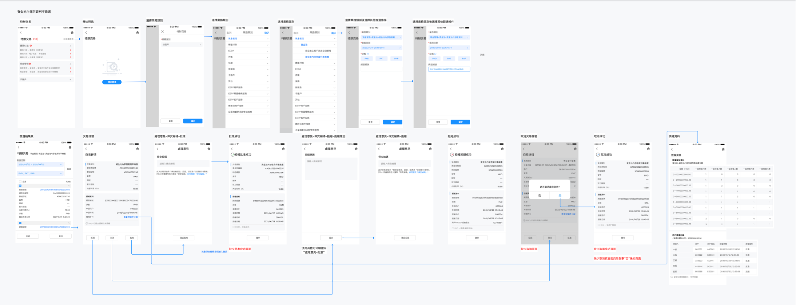
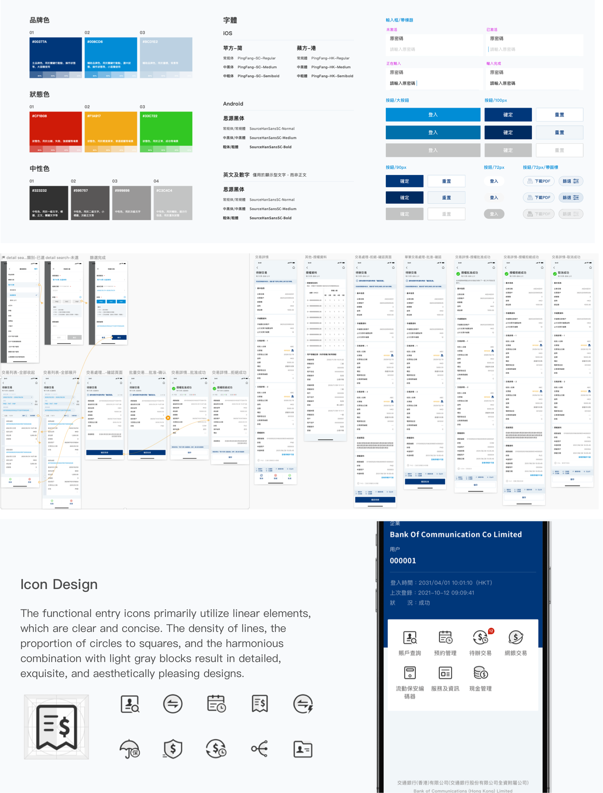

We aim to provide corporate online banking clients with a safer and more considerate digital banking service. We have achieved synchronization of features between the existing web platform and newly added mobile devices features.
Design Challenges：
1.How to leverage design to make users feel the security of the app
2.How to sort out the complex process of different login scenariosï¼›
Based on the requirement documents for new mobile devices features, we integrated them with the existing web functionality.
Considering the differences in usage habits and aesthetic preferences between China Hong Kong and China mainland interface products, we have selected leading bank products in the Hong Kong region as competitive benchmarks. We conducted a comparative analysis of the strengths and weaknesses in their interface design to provide insights and inform our design strategy.
Security is the foundation of all design principles, How can we reflect security through design? We have also inquired with the business about the aspects where users feel a lack of reassurance. Based on The elements of user experience from Jesse James Garrett, The design focuses on strengthening users' perception of security from both the 'Structure & Skeleton' and the 'Surface'.

After collaborating with the business team to determine the app's information architecture, we prioritize processes, present conceptual interaction design solutions for core processes, and then extend to other branch processes.

After collaborating with the business team to determine the app's information architecture, we prioritize processes, present conceptual interaction design solutions for core processes, and then extend to other branch processes.
User Flow And Wireframes

Online Banking wireframes page
The design style aligns with the Bank of Communications' minimalist corporate image, establishing clear visual hierarchies for information to enhance readability and assist users in efficiently reading and processing information. The use of distinct elements and orderly layout reduces visual strain.
The scope of use for the Bank of Communications' corporate banking is in the Hong Kong region, where there is a significant need for English adaptation. Therefore, after completing the Chinese interface, typical pages are adapted for English layout, which is then extended to other general pages.
 Back To Top
Back To Top